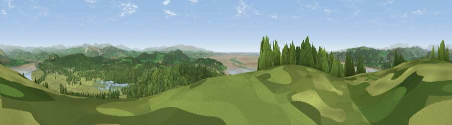

Viewpoint near Arnside
#3633 in England · top 16% of its area beats it · near ArnsideWhere it is
The exact computed spot (SD 45625 77425). Click the marker for map links.
The view, rendered

A 360° render of this exact spot computed from the terrain model, tree cover and land cover — summer colours, afternoon light, calibrated against photographs of famous viewpoints. Real trees, hedges and buildings will differ in detail.
The panorama
Grey silhouette: terrain skyline in each direction (720 bearings, Earth curvature and refraction included). Dashed green: skyline with trees (+15 m) and buildings (+8 m) as obstacles. Blue strip: how far the ground is visible on each bearing.
Where the view opens
Wedge length = distance to the farthest visible ground on that bearing (vegetation-aware). Rings at 10, 25 and 50 km.
What fills the view
42% woodland · 36% grassland · 17% water · 3% built-up · 1% wetland ·
Angular shares of the visible panorama (visual magnitude), not map area. Landscape diversity 0.54 (0–1 Shannon).
Key numbers
More beautiful places nearby
The staircase of upgrades: each row has a higher view potential than everything closer. Driving times are estimates from straight-line distance, calibrated against real road routing — check an actual route before setting out.
| Place | Direction | Drive | Score |
|---|---|---|---|
| Viewpoint near Arnside | WSW · 0 km | ~1 min | 80.7 |
| Warton Crag | SE · 6 km | ~13 min | 83.2 |
| Viewpoint near Grange-over-Sands | W · 6 km | ~13 min | 83.4 |
| Viewpoint near Cartmel | W · 10 km | ~19 min | 87.0 |
| Viewpoint near Cartmel | WNW · 10 km | ~20 min | 87.2 |
| Viewpoint near Finsthwaite | NNW · 13 km | ~24 min | 90.3 |
| The Knoll | S · 390 km | ~374 min | 91.0 |
54.18969, -2.83480 · source: screening · position refined by local search. Computed location — check access rights before visiting.